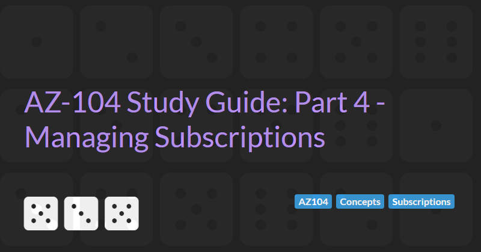

Managing Subscriptions
The AZ-104: Azure Administrator Associate certification requires subject matter expertise in implementing, managing, and monitoring an organization's Microsoft Azure environment, including virtual networks, storage, compute, identity, security, and governance.
In part 4 of the guide we will cover managing Subscriptions.
The Basis of Billing
Subscription are accessed via the Subscription icon in the portal and show the costs of all resources that are part of the subscription.
Subscription Administrator
Like other resources, permissions for a subscription can be configured via the Access Control (IAM) settings.
Cost Center and Tagging
The Cost analysis settings within a subscription allow you to analyse which resources are the most expensive and show the accumulated costs over the selected period. Pie charts show cost breakdowns by service type, location (Azure region), and resource group. Naming resource groups around the application context can be useful to see how much a given application is costing.
Tags can be used to further breakdown costs. Tags are typically used for billing codes (so projects can be assigned the appropriate costs), resource owner (so we can easily see who created and is responsible for a resource), and environment (so we can see which resources belong to production, dev and test).
Resource Groups and Resource Locks
A resource group contains resources (VMs, web apps, storage accounts, public IP addresses, network interface cards, network security groups etc.)
When a resource group is deleted all resources in that group are also deleted.
Deployments happen at the resource groups level.
Policies can be applied at the resource groups level (see below).
Resources and resource groups can have locks. A lock at the resource group level affects all resources within that group. There are two types of locks:
- Delete locks prevent the resource or resource group being deleted.
- Read-only locks prevent the resource or resource group being modified.
Permissions can be set so that users cannot delete locks and therefore cannot delete or modify critical resources.
Azure Policy
Azure policies can be accessed by going to the Policy menu or searching for the Policy service in the Azure Portal.
Azure policy allows administrator to add governance to Azure subscriptions and resource groups to prevent users creating too many resources or expensive resources. A number of built in policies exist and custom policies can be created using a JSON notation. Resources can be restricted or audited if they do not comply with the policy. Audited resources can still be created but show up in a report whenever a resource does not meet the standards outlined in the policy.
Policies can be used to:
- Limit allowed VM SKUs
- Require SQL server version 12.0
- Limit allowed storage account SKUs
- Limit allowed resource types
- Limit allowed regions
- Apply tag and its default value
- Enforce tag and its value
- Define not allowed resource types
Existing policies can be viewed by going to the Definitions section of the Policy blade. New policies can be created by clicking the + Policy definition button or from existing definitions by clicking on the ... button next to the existing policy. For example the Allow virtual machine size SKUs can be duplicated and the effect changed from Deny to Audit to audit VMs that do not match a specific SKU size.
Policies can be assigned to different scopes (either a subscription or a specific resource group) by going to the Assignment section of the Policy blade.
Compliance with policies can be viewed on the Compliance section of the global Policy blade or the resource group Policy blade.
When initially assigned a policy will be in a Not started status. Policies are executed periodically in the background. A policy can be force to execute by running the PowerShell applet Start-AzPolicyComplianceScan (optionally passing the -ResourceGroup parameter).
Moving Resources
The Move option within the Resource group Overview blade allows selected resources to be moved to another resource group or subscription or region.
Managing Policy Using PowerShell
Everything you can do in the portal you can do in PowerShell.
The following PowerShell command can be used to search for policy definitions and return their resource id and display name where the display name contains the text 'SKU':
Get-AzPolicyDefinition | Select-Object ResourceId, @{Name='DisplayName'; Expression={$_.Properties.DisplayName}} | Where-Object {$_.DisplayName -cmatch 'SKU'} | Format-List
This will allow us to find the resource id of the policy with the name Allow virtual machine size SKUs and assign it to a new resource group:
$definition = Get-AzPolicyDefinition -ResourceId [Resource ID from above]
New-AzResourceGroup -name 'testrg' -location 'uksouth'
$rg = Get-AzResourceGroup -name 'testrg' -location 'uksouth'
$basicSKUs = Get-AzVMSize -Location 'uksouth' | Where-Object { $_.Name -clike 'Basic*' }
$allowedSKUs = @{'listOfAllowedSKUs'=($basicSKUs.Name)}
New-AzPolicyAssignment -Name 'TestRG_AllowVMSize' -DisplayName 'TestRG Allowed VM Size SKU' -Scope $rg.ResourceId -PolicyDefinition $definition -PolicyParameterObject $allowedSKUs
Subscriptions and Management Groups
It is possible to create multiple Subscription and link them to a single Azure AD tenant. You might want to do this if you have different payment methods/departments responsible for different resources.
When creating a resource you can select the subscription that the resource belongs to.
Any given enterprise may have several subscription.
Management groups help manage access, policy, and compliance by grouping multiple subscriptions together.
Note that before you can create any Management groups you must enable Access Management for Azure resources in the Properties section of the Azure AD as described in the instructions on the Microsoft docs website. You can also rename the Tenant name here too.
Management groups can contain child management groups and/or Subscriptions.
Blueprints (not covered in the AZ-104 exam) enable quick creation of governed subscriptions. This allows Cloud Architects to design environments that comply with organizational standards and best practices – enabling your app teams to get to production faster. A number of predefined Blueprints are available to cover common usage scenarios that require locked down policies (e.g UK NHS, ISO 27001, etc.)